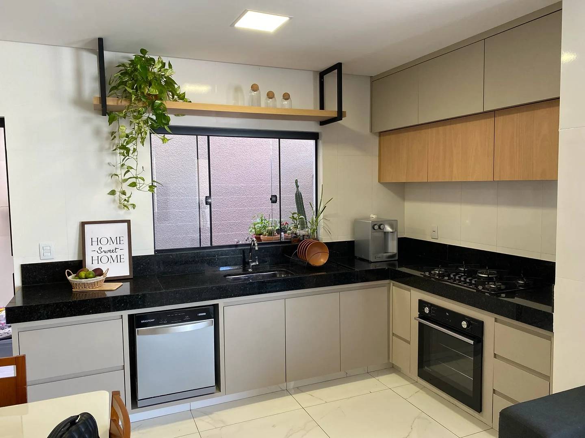
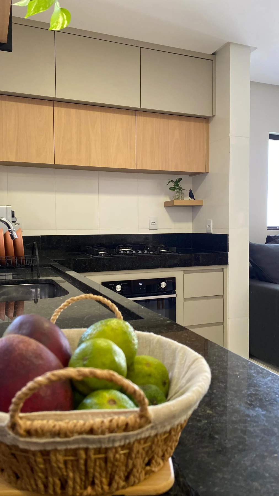
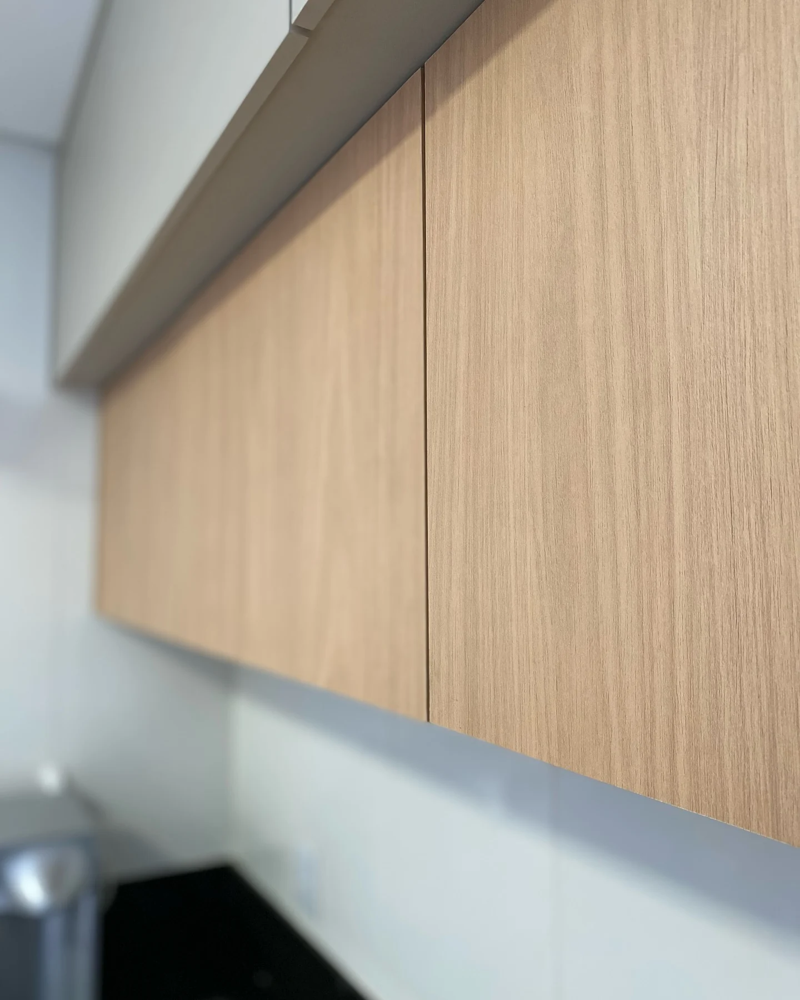
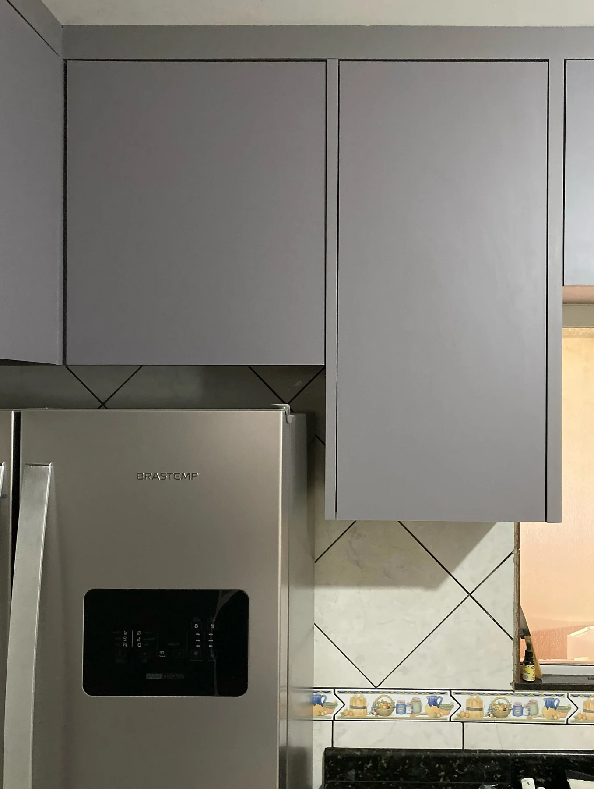
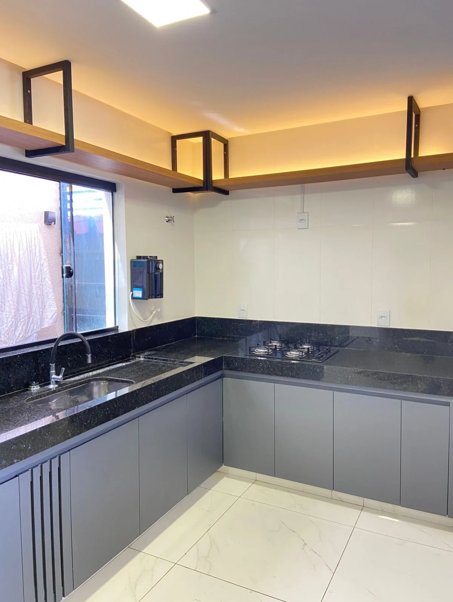
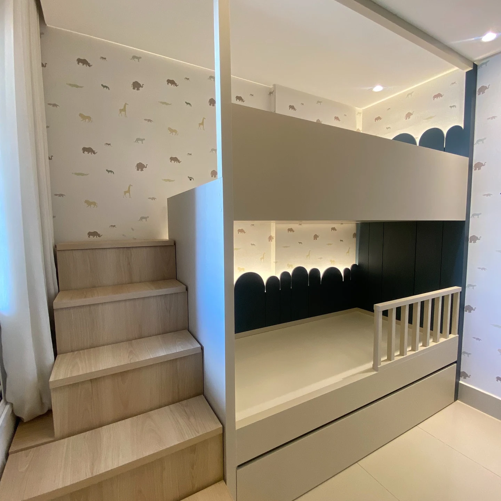
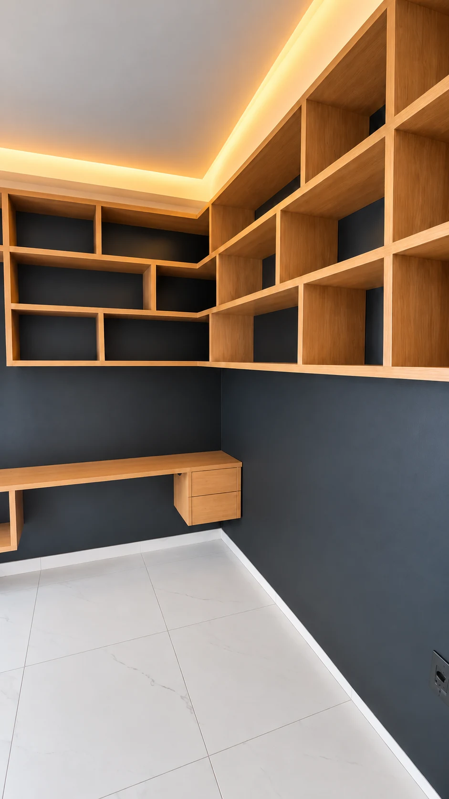
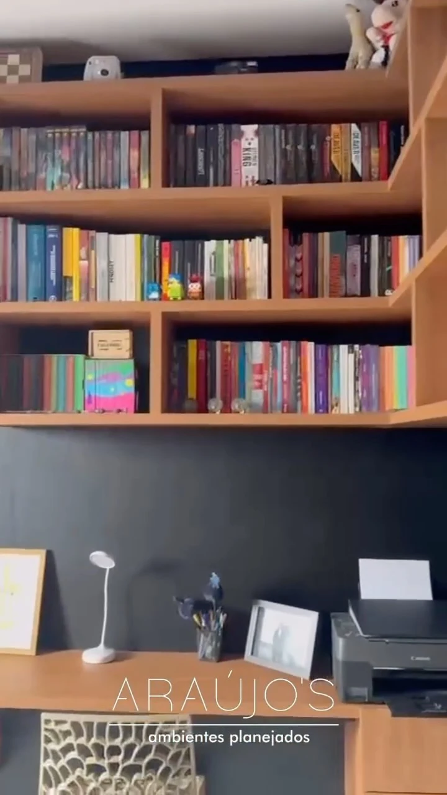
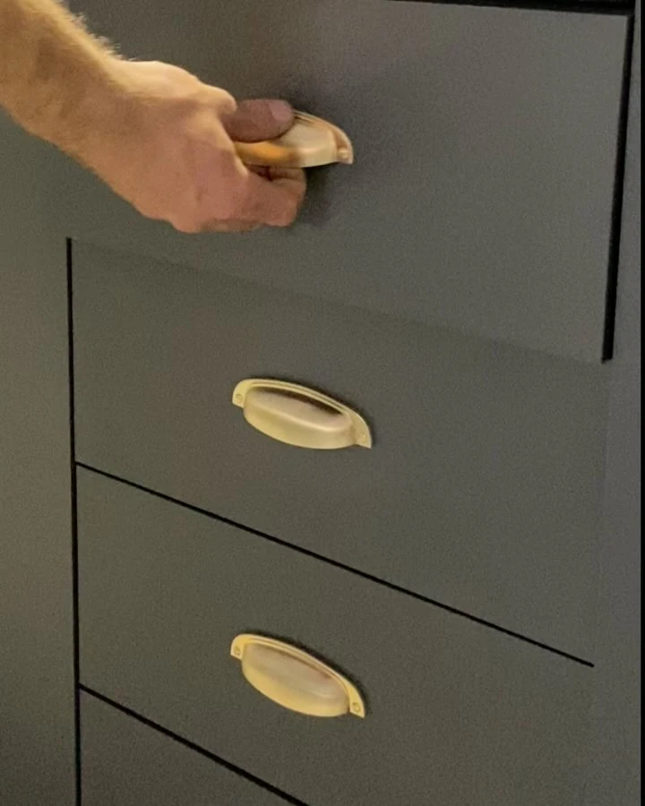
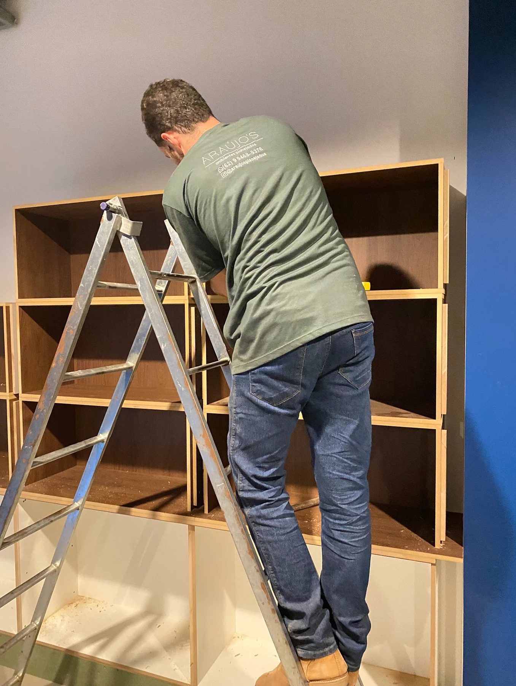

Do armário ao balcão,
o conjunto faz diferença.
O jeito de cozinhar, o que precisa ficar à mão, o lugar de cada objeto. É a vida real que dá sentido a um móvel sob medida.
A Araújo’s trabalha com móveis personalizados em Goiânia, aproximando funcionalidade, materiais e personalidade em cada ambiente.
Dentro do ambiente
Madeira e cinza.
Uma cozinha completa.
Cozinha planejada
Madeira, tons neutros e espaço para o cotidiano.


Ver de pertoAmadeirado e cinza
A textura amadeirada encontra o cinza em uma composição que acolhe sem pesar.
Bancada e armários em L
Armários, bancada e circulação fazem parte de uma mesma conversa.
O olhar de perto
Portas, gavetas
e espaço
para guardar.
Veja as portas amadeiradas, os armários sobre a geladeira e a bancada em L. Depois, explore também os outros ambientes abaixo.
Ver os registros





Mais registros do portfólio
Para dormir,
trabalhar e guardar.
Além das cozinhas: quarto infantil, escritório, estante de livros e detalhes dos armários. Abra cada registro ou leve a referência para a conversa.


Quarto infantil com escada
Quarto infantilEscada lateral, espaço elevado e iluminação em uma composição clara com detalhes amadeirados.


Escritório com nichos amadeirados
Escritório gamerAmbientação com IAVer original
Bancada em L, nichos abertos e fundo escuro. O post apresenta a combinação Palissandro e Argel.


Estante de livros e bancada
Home officeUma composição já em uso: livros nos nichos superiores e bancada de trabalho abaixo.


Gavetas com puxadores concha
Detalhe de marcenariaFrentes escuras e puxadores em concha: um detalhe para levar como referência ao seu armário.

Da ideia à matéria
Por trás de cada
ambiente, existe
o fazer.
Marcenaria é também o trabalho que acontece de perto. O cuidado com o desenho ganha forma na escolha de materiais, no ajuste das peças e na montagem.
Conheça os bastidoresSua ideia é o ponto de partida
Antes do móvel,
vamos falar de você.
A sua rotina+
Como você usa o ambiente? O que funciona hoje e o que precisa mudar? Essas respostas ajudam a dar direção ao seu planejado.
O seu espaço+
Fotos, medidas e referências ajudam a começar a conversa sobre as possibilidades do ambiente.
O seu jeito+
Texturas, cores e referências que têm a ver com você. Guarde suas ideias para compartilhar com a equipe.
Goiânia, Goiás
O próximo ambiente
pode ser o seu.
Conte para a Araújo’s o que você imagina.
A conversa começa no Instagram.
Seu ambiente começa com uma conversa.
Escolha por onde começar. Prepare sua mensagem e compartilhe suas referências com a equipe.